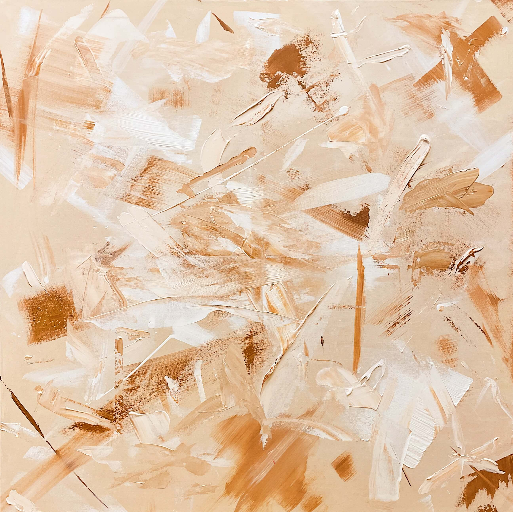
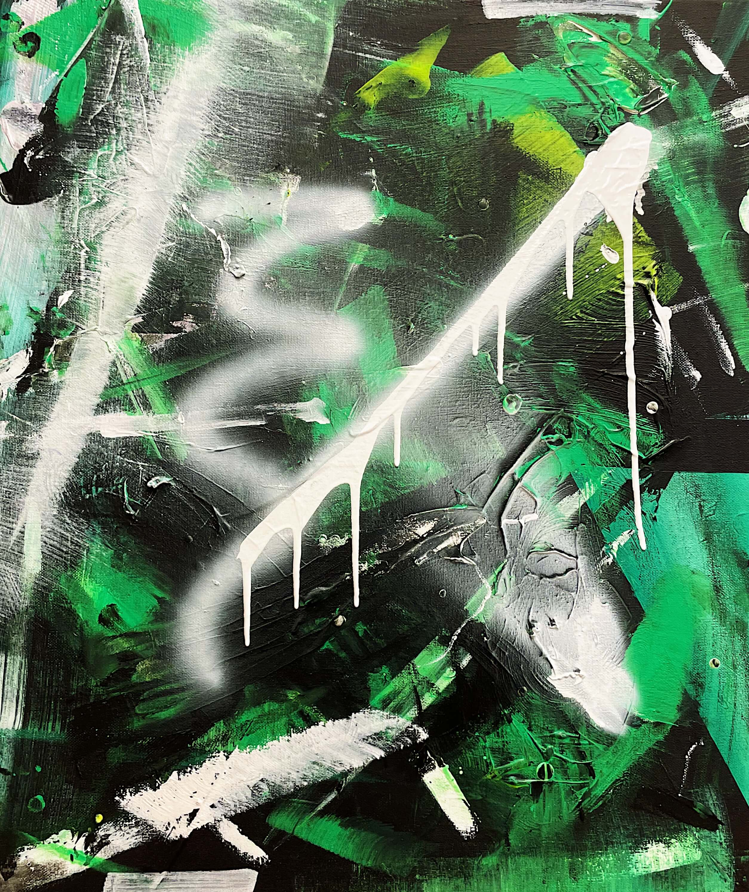
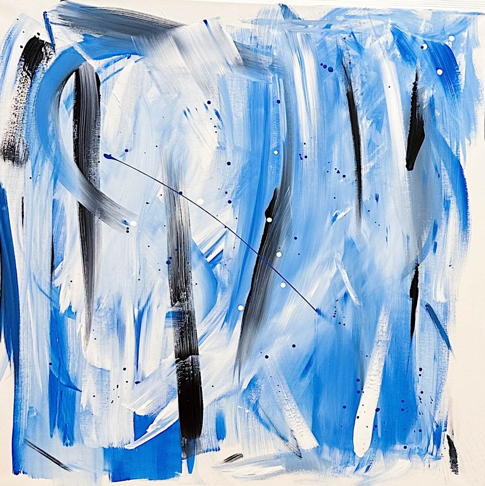
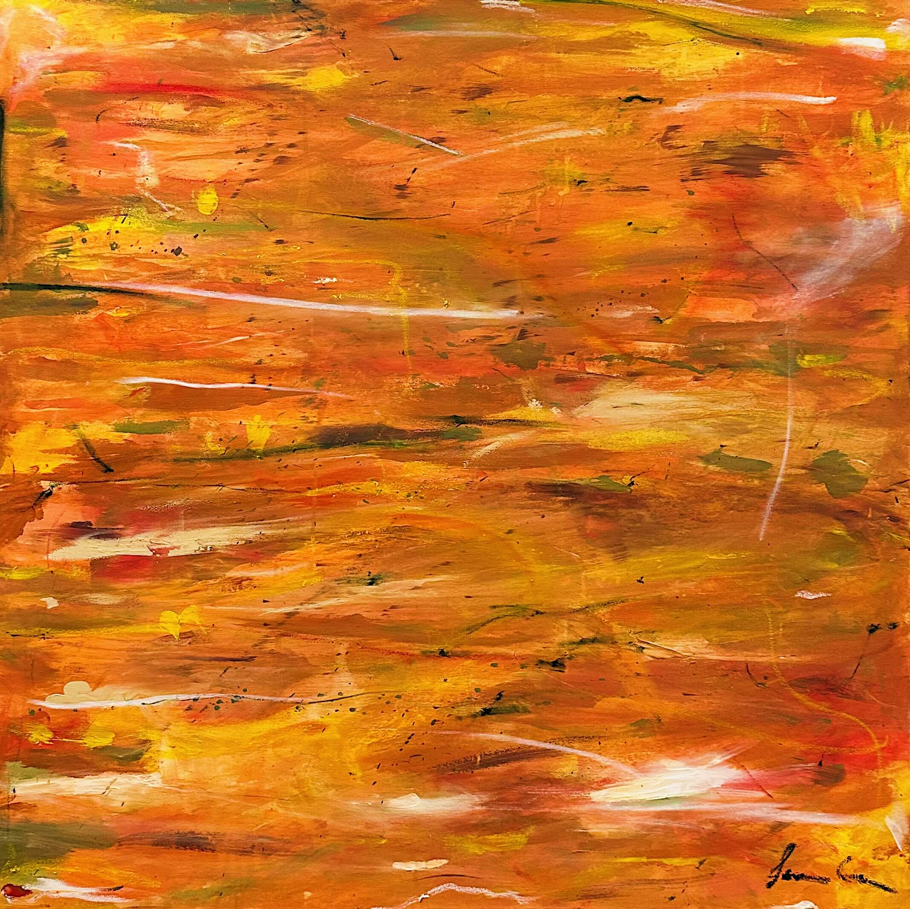

This series endeavors to highlight the intricate emotions and struggles that arise during self-reflection and sessions of therapy. Multiple layers of vibrant, dynamic colours and strokes provide a backdrop to an ever-evolving work of art. Some of these pieces are finished in one session, others have been painted over them multiple times, and some I may never be consider to be complete. Through these paintings, I aim to convey a range of emotions from hopelessness, sadness and anger to joy, confession and healing.
Ramblings of a Madman - 2023
Beige is bland, boring and banal - 2023
Untitled 4 - 2023
Untitled 3 - 2022
Around and Around and Around - 2022